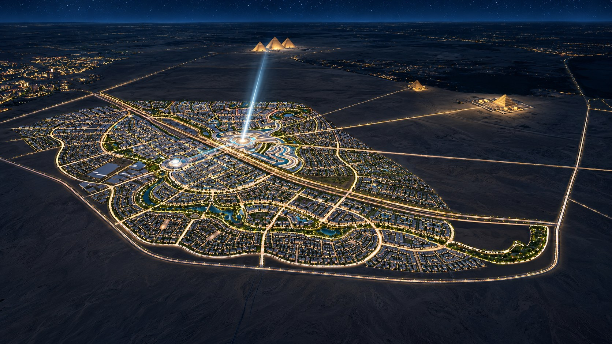

Projects / Strategic Advisory
Green Star Hotels Initiative

The Green Star Hotels Initiative was launched to promote sustainable tourism in Egypt by introducing environmentally sound practices within the hospitality sector. With Egypt’s tourism industry being a vital economic driver but also an environmental risk factor, the project aimed to improve the ecological performance of hotels, reduce water and energy waste, and align the sector with international sustainability standards. More than 200 hotels nationwide earned the Green Star certification after meeting rigorous audit and training requirements.
- Location
- Egypt
- Year
- 2010–2011
- Type
- Strategic Advisory
- Region
- Egypt
- Client
- GIZ – Strategic Alliance
- Collaborators
- AGEG, BMZ
- PUD scope
- Sustainable hotel certification and audits